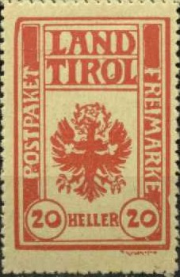
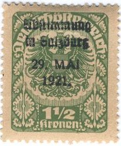
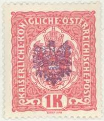

{kind=link}



Note: on my website many of the
pictures can not be seen! They are of course present in the
catalogue;
contact me if you want to purchase the catalogue.

Reduced sizes.
These stamps were used for food parcels in Tirol. A 20 heller red on white and red on yellow exist in the small size and a larger stamp of 20 heller in red (also exists with 3 types of overprints).
All these overprints were made by local postmasters (without official authorization).




Eagle and '24 April 1921'
I have seen this red 'Eagle and 24 April 1921'
overprint on the following issues:
On 1919 Eagle issue: 5 h grey (small size), 80 h red, 1 K brown,
1 1/2 K green, 2 K blue.
On 1919 woman planting tree issue: 50 h blue.
On 1919 parliament issue: 2 1/2 K olive, 5 K black, 7 1/2 K
lilac, 20 K violet and red.

(Cancel from a prisonercamp 'Gefangenenlager': highly suspected
item!)
I have also seen this overprint on the 15 h Emperor Charles issue of 1917.
I've seen an imperforate reprint-sheet, issued in 1978 with additional inscription 'GEDENKBLATT 60 JAHRE 1918 1978' of this values 20 h green (Emperor Charles), 3 h violet (crown) and 40 h green (arms).
(Overprint 'Salzburger Volksabstimmung', reduced sizes)
This overprint was a private one and was not authorized by the authorities. Nevertheless some used examples seem to exist.

I have seen the following values with this 'small
eagle overprint':
On crown issue of 1916: 3 h violet, 5 h green, 6 h orange, 12 h
blue.
On Emperor Charles issue of 1917: 20 h green, 25 h blue, 30 h
violet
On arms issue of 1916: 40 h olive, 50 h green, 60 h blue, 80 h
brown, 90 h lilac.
On express delivery stamp of 1917: 2 h red (see image above).
These are the only two stamps I have seen sofar with a larger
eagle overprint.